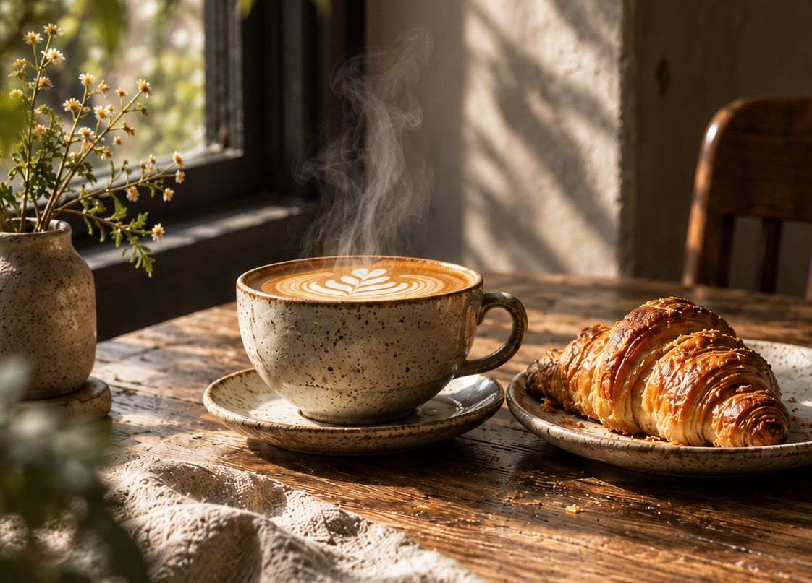
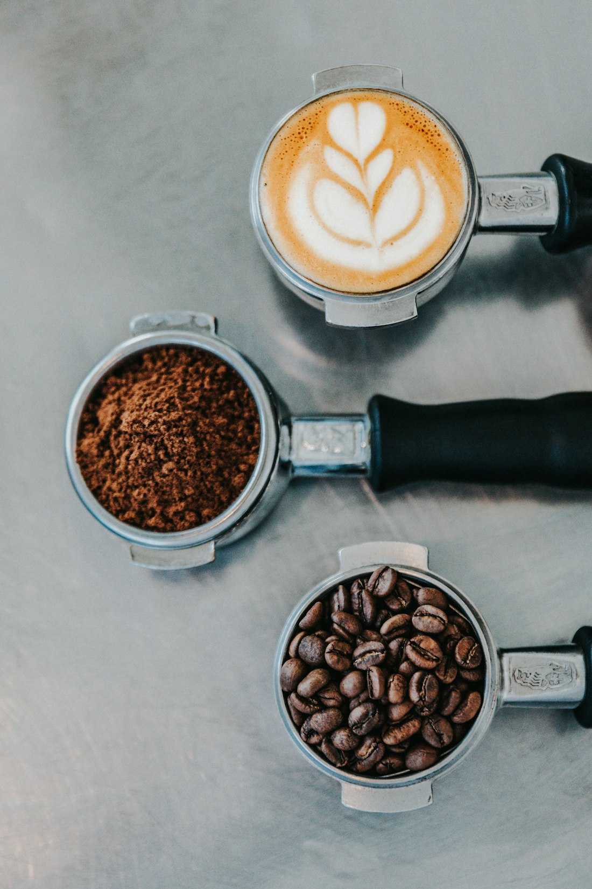
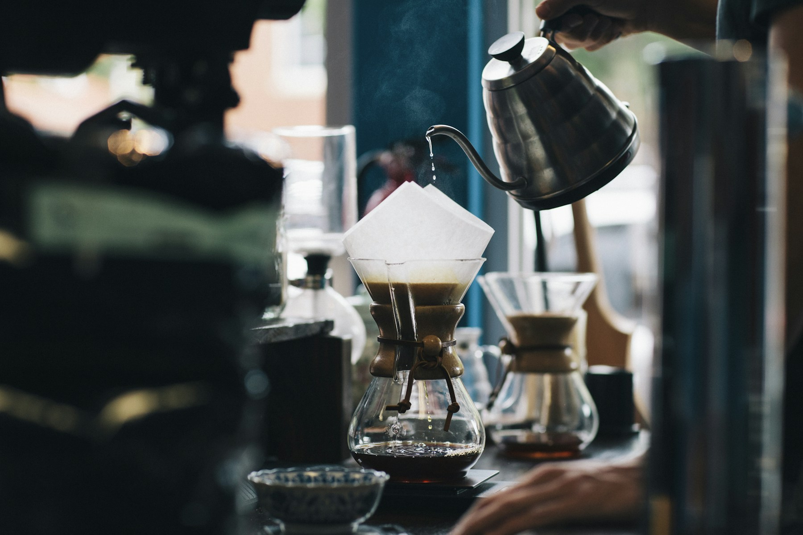
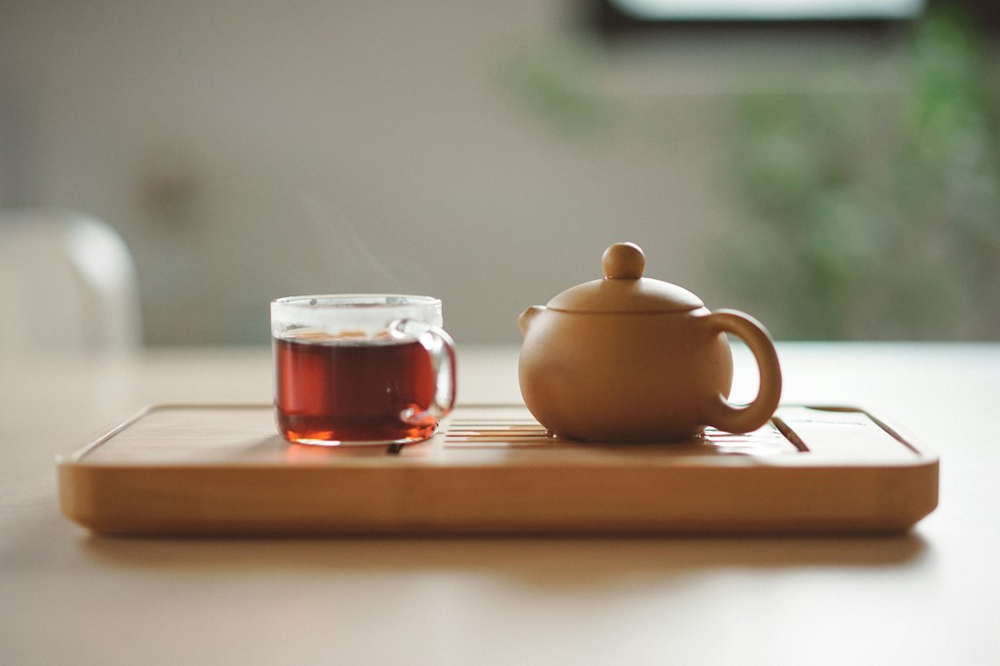
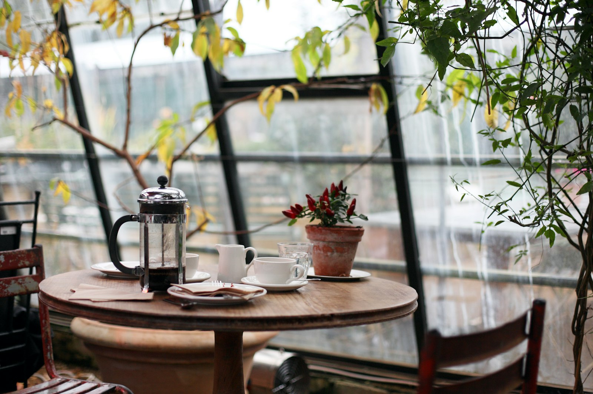
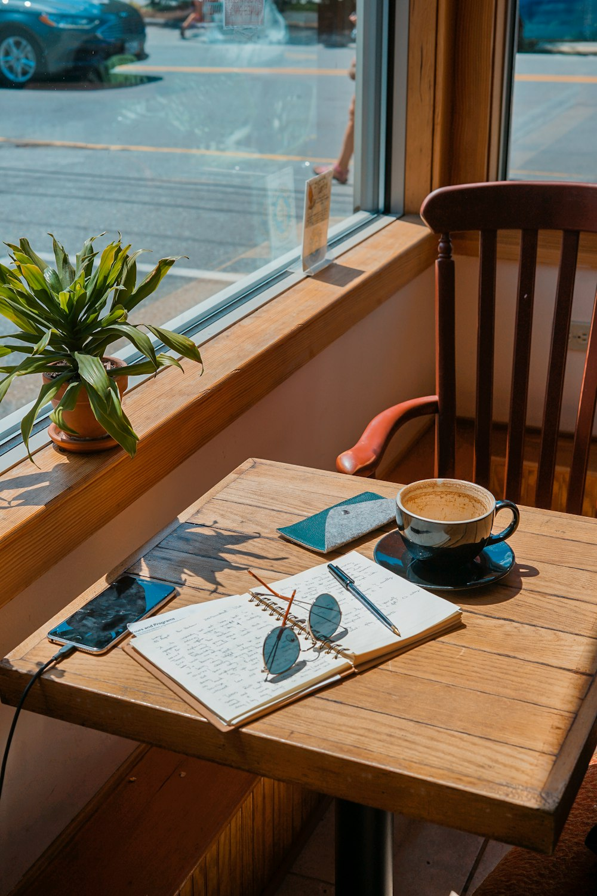
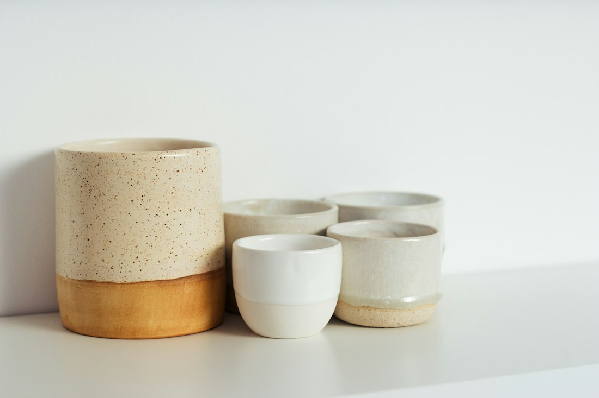
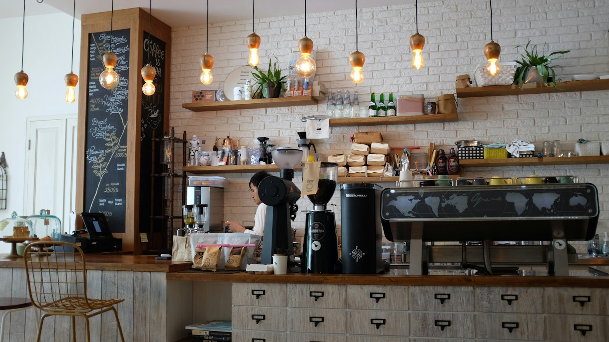

Espresso
Rs. 420Short, syrupy and direct. Served in a warmed cup.

Carefully prepared coffee, something from the oven, and a seat by the window for as long as you need it.
Explore the menuThree ways we make what is on the menu. Nothing secret, nothing complicated: water, time and attention.

Hot water is pushed through a tightly packed puck of finely ground coffee. In well under a minute it becomes a small, concentrated shot with a layer of crema on top.
It is the base of everything in the espresso and milk-based columns of the menu.

Water is poured slowly, in stages, over coarser grounds sitting in a paper filter. It drains through by gravity alone, so the cup comes out lighter and clearer.
V60 for a single cup, Chemex when two people want to share.

Loose leaves or fresh mint sit in hot water until they are ready, then the tea is poured off so it never turns bitter. Masala chai is simmered with milk and whole spices instead.
Ask for a pot if you are planning to stay.
A room for reading, working, meeting someone, or simply sitting with a cup until it goes cool.




A short list that changes little. Made to sit beside a cup, not to compete with it.
Laminated pastry, baked through the morning.
Croissant, almond cream, flaked almonds.
Soft knotted dough, cardamom sugar.
A slice with a thin citrus glaze.
Toasted slice, salted butter on the side.
Soft scrambled egg and chives on sourdough.
Cheddar on sourdough, tomato chutney to dip.
Roast peppers and aubergine, labneh, herbs.
Thick yoghurt, oat granola, seasonal fruit.
Baked in the afternoon, slightly underdone.
A plain, moist slice. Good with a filter coffee.
Descriptions list the main ingredients only. Allergen information is not shown because this demonstration menu has not been verified. Please ask at the counter.
Adjust anything you like. Your order stays in this browser until you clear it.
Back to the counterOpen every day
SLOW HOURS is an independent demonstration brand. The address, hours, seating and contact details are illustrative.
Tell us when you are coming and where you would like to sit. This demonstration saves your request in this browser and does not send it.
Use the table request on this page to draft one and preview a demo booking. This demonstration does not send reservations; a real cafe would confirm by message.
Oat milk is available for every milk-based drink on this illustrative menu, for a small extra charge.
Laptops are welcome on weekdays at the long table and window bar. At weekends we keep the long table for conversation.
Allergen details are not listed here because this demo menu has not been verified. Please ask at the counter before ordering.